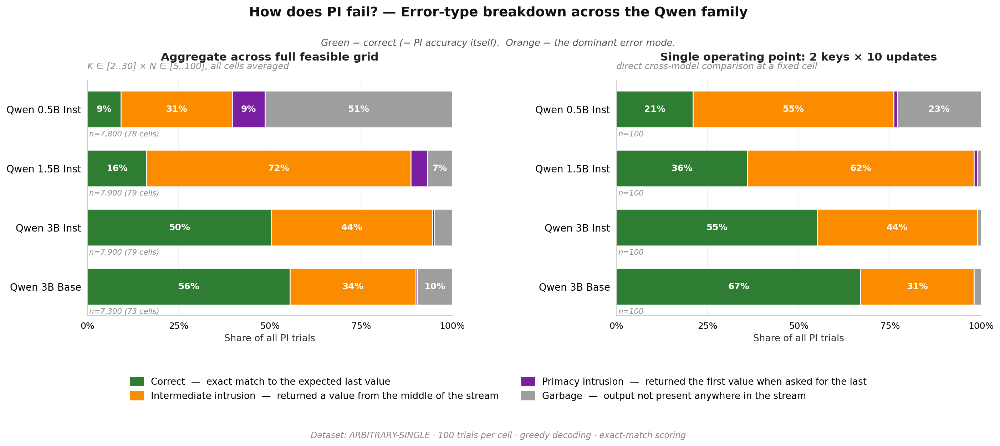
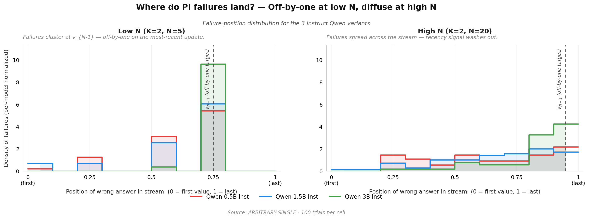

<!doctype html>
<html lang="en">
<head>
  <meta charset="utf-8" />
  <title>Week 2 Update — Position-Dependent Retrieval in Language Models</title>
  <meta name="viewport" content="width=device-width, initial-scale=1" />
  <script crossorigin src="https://unpkg.com/react@18/umd/react.development.js"></script>
  <script crossorigin src="https://unpkg.com/react-dom@18/umd/react-dom.development.js"></script>
  <script src="https://unpkg.com/@babel/standalone/babel.min.js"></script>
  <style>
    :root {
      --ink: #1A1A1A;
      --ink-2: #444;
      --ink-3: #888;
      --rule: #EEE;
      --bg: #FAFAFA;
      --card: #FFFFFF;
      --green: #2E7D32;
      --red: #C62828;
      --blue: #1565C0;
      --orange: #FB8C00;
      --purple: #7B1FA2;
      --grey: #9E9E9E;
      --code-bg: #F4F4F4;
      --slide-w: 100vw;
      --slide-h: calc(100vh - 88px); /* viewport minus chrome (header + progress + controls) */
    }
    * { box-sizing: border-box; }
    html, body {
      margin: 0; padding: 0;
      background: #FFFFFF;
      font-family: -apple-system, BlinkMacSystemFont, "Helvetica Neue", Arial, sans-serif;
      color: var(--ink);
      height: 100vh; overflow: hidden;
    }
    .deck-root {
      height: 100vh; width: 100vw;
      display: flex; flex-direction: column;
      align-items: stretch; justify-content: stretch;
      padding: 0;
    }
    .deck-frame {
      width: 100vw;
      height: 100vh;
      max-width: none;
      background: var(--card);
      box-shadow: none;
      border-radius: 0;
      overflow: hidden;
      display: flex; flex-direction: column;
    }
    .slide-header {
      padding: 8px 24px; background: var(--bg);
      border-bottom: 1px solid var(--rule);
      font-size: 11.5px; color: #777;
      display: flex; justify-content: space-between; align-items: center;
      letter-spacing: 0.02em;
      flex: 0 0 auto;
    }
    .slide-header strong { color: #333; font-weight: 600; }
    .slide-stage {
      position: relative;
      width: 100%;
      flex: 1 1 auto;
      background: #FFFFFF;
      overflow: hidden;
      min-height: 0;
    }
    .slide-fade {
      position: absolute; inset: 0;
      opacity: 1;
      transition: opacity 180ms ease-in-out;
    }
    .slide-fade.out { opacity: 0; }
    .slide-progress {
      height: 3px; background: var(--rule);
      width: 100%;
    }
    .slide-progress-fill {
      height: 100%; background: var(--ink);
      transition: width 200ms ease;
    }
    .deck-controls {
      padding: 8px 24px; background: var(--bg);
      border-top: 1px solid var(--rule);
      display: flex; gap: 12px; align-items: center; justify-content: space-between;
      font-size: 11.5px; color: #777;
      flex: 0 0 auto;
    }
    .deck-controls button {
      background: #FFF; border: 1px solid #DDD;
      padding: 5px 12px; border-radius: 4px;
      font: inherit; cursor: pointer; color: var(--ink-2);
    }
    .deck-controls button:hover { background: #F0F0F0; }
    .deck-controls button:disabled { opacity: 0.4; cursor: default; }
    .deck-controls .hint { color: #999; font-size: 10.5px; }

    /* ── Common slide layout ───────────────────────────────────── */
    .slide {
      width: 100%; height: 100%;
      padding: 48px 56px;
      background: #FFFFFF; color: var(--ink);
      display: flex; flex-direction: column;
      overflow: hidden;
    }
    .slide h1 {
      font-size: 26px; font-weight: 700; letter-spacing: -0.01em;
      margin: 0 0 4px 0;
    }
    .slide h2 {
      font-size: 14px; font-weight: 600; letter-spacing: 0.05em;
      color: var(--ink-3); text-transform: uppercase;
      margin: 0 0 18px 0;
    }
    .slide p { margin: 0 0 8px 0; line-height: 1.5; font-size: 14px; }
    .slide .subtitle { color: #666; font-size: 13.5px; margin-bottom: 24px; }
    .mono {
      font-family: "SF Mono", Monaco, Menlo, monospace;
      background: var(--code-bg);
      padding: 12px 16px; border-radius: 4px;
      font-size: 12.5px; line-height: 1.55;
      white-space: pre; overflow: hidden;
    }
    .mono.tight { padding: 10px 14px; font-size: 11.5px; line-height: 1.5; }
    .mono.dense { font-size: 12px; line-height: 1.45; }
    table.clean {
      border-collapse: separate; border-spacing: 4px; width: 100%;
    }
    table.clean th, table.clean td {
      padding: 8px 10px; border-radius: 4px;
      font-size: 12.5px; text-align: left;
      background: var(--code-bg); color: var(--ink);
    }
    table.clean th {
      background: #ECECEC; color: var(--ink-2);
      font-weight: 600; font-size: 11.5px; letter-spacing: 0.03em;
    }
    table.clean td.num {
      font-variant-numeric: tabular-nums; font-weight: 600; text-align: center;
    }
    .row2 { display: grid; grid-template-columns: 1fr 1fr; gap: 28px; }
    .row3 { display: grid; grid-template-columns: 1fr 1fr 1fr; gap: 18px; }
    .panel {
      background: #FFFFFF; border: 1px solid var(--rule);
      border-radius: 6px; padding: 16px 18px;
    }
    .panel h3 {
      font-size: 13px; font-weight: 700;
      color: var(--ink); margin: 0 0 10px 0;
      letter-spacing: 0.02em;
    }
    .panel p { font-size: 12.5px; color: var(--ink-2); }
    .badge {
      display: inline-block; padding: 2px 9px; border-radius: 999px;
      font-size: 10.5px; font-weight: 600; letter-spacing: 0.04em;
      text-transform: uppercase; color: #FFF;
    }
    .footnote {
      font-size: 11px; color: #999; font-style: italic;
      margin-top: auto; padding-top: 10px;
    }

    /* ── Slide 1 — title ───────────────────────────────────────── */
    .title-slide {
      align-items: flex-start; justify-content: center;
      padding: 96px 96px;
    }
    .title-slide .eyebrow {
      font-size: 11.5px; font-weight: 600;
      color: var(--ink-3); letter-spacing: 0.18em; text-transform: uppercase;
      margin-bottom: 28px;
    }
    .title-slide .big-title {
      font-size: 46px; font-weight: 700;
      letter-spacing: -0.02em; line-height: 1.1;
      max-width: 920px; margin: 0 0 18px 0;
    }
    .title-slide .big-sub {
      font-size: 18px; color: #555;
      font-weight: 400; max-width: 720px;
    }
    .title-slide .meta {
      margin-top: auto; font-size: 13px; color: var(--ink-3);
      display: flex; gap: 18px;
    }
    .title-slide .rule {
      width: 56px; height: 3px; background: var(--ink);
      margin-bottom: 32px;
    }

    /* ── Slide 2 ─────────────────────────────────────────────── */
    .vitals { font-size: 12px; }
    .vitals .first { color: var(--blue); font-weight: 700; }
    .vitals .last  { color: var(--red); font-weight: 700; }
    .qbox {
      margin-top: 14px;
      border: 1px solid var(--rule); border-radius: 6px;
      overflow: hidden;
    }
    .qbox table { width: 100%; border-collapse: collapse; }
    .qbox th, .qbox td { padding: 10px 14px; font-size: 12.5px; text-align: left; border-bottom: 1px solid var(--rule); }
    .qbox th { background: #F8F8F8; font-weight: 600; color: var(--ink-2); font-size: 11.5px; }
    .qbox tr:last-child td { border-bottom: none; }
    .qbox td.expected { font-weight: 700; font-family: "SF Mono", Monaco, Menlo, monospace; }
    .qbox td.expected.first { color: var(--blue); }
    .qbox td.expected.last  { color: var(--red); }

    .litm-table { width: 100%; border-collapse: collapse; font-size: 12px; }
    .litm-table th, .litm-table td {
      border-bottom: 1px solid var(--rule);
      padding: 10px 12px; vertical-align: top;
    }
    .litm-table th { background: #F8F8F8; color: var(--ink-2); font-size: 11px; text-align: left; font-weight: 600; }
    .litm-table th.this { background: #FFF8E1; color: var(--ink); }
    .litm-table td.row-label { color: var(--ink-3); font-size: 11.5px; font-weight: 600; }
    .litm-table tr:last-child td { border-bottom: none; }

    /* ── Slide 3 ─────────────────────────────────────────────── */
    .roadmap-row { display: grid; grid-template-columns: 1fr 24px 1fr 24px 1fr; align-items: center; gap: 0; margin-bottom: 28px; }
    .roadmap-arrow { text-align: center; color: var(--ink-3); font-size: 28px; font-weight: 300; }
    .roadmap-box {
      border: 2px solid var(--rule); border-radius: 8px;
      padding: 22px 20px; min-height: 200px; display: flex; flex-direction: column;
      background: #FFFFFF;
    }
    .roadmap-box.active { border-color: var(--ink); background: #FAFAFA; }
    .roadmap-box .num { font-size: 11px; font-weight: 700; color: var(--ink-3); letter-spacing: 0.1em; }
    .roadmap-box .title { font-size: 22px; font-weight: 700; margin: 8px 0 12px; letter-spacing: -0.01em; }
    .roadmap-box .desc { font-size: 13px; color: var(--ink-2); line-height: 1.5; }
    .roadmap-box .when { font-size: 11px; color: var(--ink-3); margin-top: auto; padding-top: 12px; font-style: italic; }
    .roadmap-box.active .when { color: var(--red); font-weight: 700; font-style: normal; letter-spacing: 0.04em; }
    .roadmap-bottom {
      background: #FAFAFA; border-radius: 6px; padding: 18px 22px;
      font-size: 13px; color: var(--ink-2); line-height: 1.6;
    }
    .roadmap-bottom strong { color: var(--ink); }

    /* ── Slide 4 ─────────────────────────────────────────────── */
    .stream-box .arrow { color: var(--red); }
    .ripi-grid { display: grid; grid-template-columns: 1fr 1fr; gap: 16px; margin: 16px 0; }
    .ripi-card { border: 1px solid var(--rule); border-radius: 6px; padding: 14px 18px; }
    .ripi-card.ri { border-left: 4px solid var(--blue); }
    .ripi-card.pi { border-left: 4px solid var(--red); }
    .ripi-card .label { font-size: 11px; font-weight: 700; letter-spacing: 0.06em; text-transform: uppercase; color: var(--ink-3); }
    .ripi-card.ri .label { color: var(--blue); }
    .ripi-card.pi .label { color: var(--red); }
    .ripi-card .q { font-size: 13px; margin: 4px 0 6px; font-weight: 600; }
    .ripi-card .ex { font-family: "SF Mono", Monaco, Menlo, monospace; font-size: 12px; color: var(--ink-2); }
    .ripi-card .tests { font-size: 11.5px; color: var(--ink-3); font-style: italic; margin-top: 4px; }
    .iv-row {
      display: grid; grid-template-columns: 1fr 1fr 1fr 1fr; gap: 12px;
    }
    .iv-cell {
      border-radius: 4px; background: var(--code-bg); padding: 10px 12px;
      font-size: 11.5px;
    }
    .iv-cell .k { color: var(--ink-3); font-weight: 600; letter-spacing: 0.04em; text-transform: uppercase; font-size: 10px; }
    .iv-cell .v { color: var(--ink); font-weight: 600; margin-top: 3px; font-family: "SF Mono", Monaco, Menlo, monospace; font-size: 12px; }

    /* ── Slide 5 ─────────────────────────────────────────────── */
    .ds-col { display: flex; flex-direction: column; gap: 10px; min-height: 0; }
    .ds-col h3 { font-size: 14px; margin: 0; letter-spacing: 0.02em; }
    .ds-col h3 .accent { font-size: 10px; font-weight: 600; color: var(--ink-3); letter-spacing: 0.08em; text-transform: uppercase; display: block; margin-bottom: 3px; }
    .ds-desc { font-size: 12px; color: var(--ink-2); line-height: 1.45; }
    .ds-confound {
      background: #FFF8E1; border-left: 3px solid var(--orange); border-radius: 3px;
      padding: 8px 12px; font-size: 11.5px; color: var(--ink-2);
    }
    .ds-confound .k { font-size: 10px; color: var(--orange); font-weight: 700; letter-spacing: 0.06em; text-transform: uppercase; display: block; margin-bottom: 2px; }
    .ds-prompt {
      background: var(--code-bg); border-radius: 4px;
      padding: 8px 12px; font-family: "SF Mono", Monaco, Menlo, monospace;
      font-size: 11px; line-height: 1.5; color: var(--ink-2);
    }

    /* ── Slide 6 ─────────────────────────────────────────────── */
    .num-prefix {
      display: inline-block; width: 22px; height: 22px;
      background: var(--ink); color: #FFF; border-radius: 50%;
      text-align: center; line-height: 22px; font-size: 11px; font-weight: 700;
      margin-right: 8px;
    }
    .err-chip {
      display: flex; align-items: center; gap: 12px;
      padding: 10px 14px; border-radius: 6px;
      background: #FAFAFA; margin-bottom: 8px;
    }
    .err-chip .swatch {
      width: 18px; height: 18px; border-radius: 4px; flex-shrink: 0;
    }
    .err-chip .name {
      font-weight: 700; font-size: 12px; letter-spacing: 0.04em;
      text-transform: uppercase; min-width: 200px;
    }
    .err-chip .desc { font-size: 12px; color: var(--ink-2); }
    .big-stat {
      font-size: 18px; font-weight: 700; color: var(--ink);
    }
    .big-stat .arrow { color: var(--green); margin: 0 8px; }
    .big-stat .before { color: var(--red); }
    .big-stat .after { color: var(--green); }

    /* ── Slide 7 — embedded styles in the slot scope ──────────── */
    /* (Slide 7 component carries its own styles, scoped by id) */

    /* ── Slide 8 ─────────────────────────────────────────────── */
    .regime-card {
      border-radius: 8px; padding: 22px 22px;
      display: flex; flex-direction: column; height: 100%;
      border: 2px solid;
    }
    .regime-card.warm { border-color: var(--red); background: #FFF5F5; }
    .regime-card.neutral { border-color: #BDBDBD; background: #FAFAFA; }
    .regime-card.cool { border-color: var(--blue); background: #F4F8FE; }
    .regime-card .label {
      font-size: 11px; font-weight: 700; letter-spacing: 0.08em;
      text-transform: uppercase; margin-bottom: 4px;
    }
    .regime-card.warm .label { color: var(--red); }
    .regime-card.neutral .label { color: #555; }
    .regime-card.cool .label { color: var(--blue); }
    .regime-card .formula {
      font-family: "SF Mono", Monaco, Menlo, monospace;
      font-size: 18px; font-weight: 700; margin: 4px 0 14px;
    }
    .regime-card .modelrow {
      display: flex; justify-content: space-between; align-items: baseline;
      padding: 6px 10px; border-radius: 4px; background: rgba(255,255,255,0.7);
      margin-bottom: 6px; font-size: 12.5px;
    }
    .regime-card .modelrow .gap-val { font-weight: 700; font-variant-numeric: tabular-nums; }
    .regime-card.warm .gap-val { color: var(--red); }
    .regime-card.cool .gap-val { color: var(--blue); }
    .regime-card .gloss {
      font-size: 11.5px; color: var(--ink-3); font-style: italic;
      margin-top: auto; padding-top: 10px;
    }
    .open-q-block {
      margin-top: 18px; padding: 14px 18px;
      background: #FFFAF0; border-left: 3px solid var(--orange);
      border-radius: 4px; font-size: 12px; color: var(--ink-2); line-height: 1.55;
    }
    .open-q-block .lead { color: var(--orange); font-weight: 700; font-size: 11px; letter-spacing: 0.06em; text-transform: uppercase; margin-bottom: 4px; }

    /* ── Slide 9 ─────────────────────────────────────────────── */
    .plot-row { display: grid; grid-template-columns: 1fr 1fr; gap: 18px; min-height: 0; }
    .plot-card { border: 1px solid var(--rule); border-radius: 6px; padding: 12px 14px 10px; display: flex; flex-direction: column; min-height: 0; }
    .plot-card .cap { font-size: 11px; color: var(--ink-3); font-style: italic; margin-bottom: 6px; }
    .plot-card img { max-width: 100%; max-height: 100%; height: auto; object-fit: contain; flex: 1; min-height: 0; }
    .plot-card .ph {
      flex: 1; display: flex; align-items: center; justify-content: center;
      background: var(--code-bg); border-radius: 4px; color: var(--ink-3);
      font-size: 12px; padding: 24px; text-align: center; min-height: 200px;
    }

    /* ── Slide 10 / 12 ───────────────────────────────────────── */
    .qlist { display: flex; flex-direction: column; gap: 14px; }
    .qitem { display: flex; gap: 14px; align-items: flex-start; }
    .qitem .qnum {
      width: 28px; height: 28px; border-radius: 50%;
      background: var(--ink); color: #FFF;
      display: flex; align-items: center; justify-content: center;
      font-weight: 700; font-size: 13px; flex-shrink: 0;
    }
    .qitem .qbody { flex: 1; }
    .qitem .qbody .qq { font-size: 14px; font-weight: 700; color: var(--ink); margin-bottom: 3px; }
    .qitem .qbody .qg { font-size: 12px; color: var(--ink-2); font-style: italic; line-height: 1.5; }
    .discussion-prompt {
      margin-top: auto; padding: 22px 28px;
      background: var(--ink); color: #FFF;
      border-radius: 8px; font-size: 22px; font-weight: 700;
      letter-spacing: -0.01em; text-align: center;
    }
    .qlist.compact .qitem .qbody .qq { font-size: 12.5px; }
    .qlist.compact .qitem .qbody .qg { font-size: 11px; }
    .qlist.compact .qitem .qnum { width: 22px; height: 22px; font-size: 11px; }
    .qlist.compact { gap: 8px; }

    /* ── Slide 11 ────────────────────────────────────────────── */
    .exp-table { width: 100%; border-collapse: separate; border-spacing: 0; }
    .exp-table th, .exp-table td {
      padding: 14px 16px; text-align: left;
      border-bottom: 1px solid var(--rule); font-size: 13px; vertical-align: top;
    }
    .exp-table th {
      background: #F4F4F4; font-size: 11px; font-weight: 700;
      letter-spacing: 0.06em; text-transform: uppercase; color: var(--ink-3);
    }
    .exp-table td:first-child { width: 28%; font-weight: 700; }
    .exp-table td:nth-child(2) { width: 38%; color: var(--ink-2); }
    .exp-table td:nth-child(3) { color: var(--ink-2); }
    .exp-table tr:last-child td { border-bottom: none; }
    .exp-tag {
      display: inline-block; font-family: "SF Mono", Monaco, Menlo, monospace;
      font-size: 11px; color: var(--ink-3); font-weight: 600; margin-right: 6px;
    }

    /* ── Slide 7 component scoped (copied) ───────────────────── */
    #slide7-qwen-results { background: #FFFFFF; color: #1A1A1A; padding: 36px 56px; font-family: -apple-system, BlinkMacSystemFont, "Helvetica Neue", Arial, sans-serif; height: 100%; display: flex; flex-direction: column; }
    #slide7-qwen-results * { box-sizing: border-box; }
    #slide7-qwen-results .container { max-width: 1280px; margin: 0 auto; width: 100%; }
    #slide7-qwen-results h1 { font-size: 22px; font-weight: 700; margin: 0 0 6px 0; letter-spacing: -0.01em; }
    #slide7-qwen-results .subtitle { color: #666; font-size: 13px; margin-bottom: 24px; }
    #slide7-qwen-results .grid { display: grid; grid-template-columns: 1fr 1fr; gap: 32px; }
    #slide7-qwen-results .dataset-title { font-size: 13px; font-weight: 700; letter-spacing: 0.04em; color: #2C2C2C; margin-bottom: 2px; }
    #slide7-qwen-results .dataset-sub { font-size: 11.5px; color: #888; font-style: italic; margin-bottom: 12px; }
    #slide7-qwen-results table { border-collapse: separate; border-spacing: 4px; width: 100%; }
    #slide7-qwen-results th { font-size: 12px; font-weight: 600; color: #444; padding: 8px 6px; text-align: center; background: #F4F4F4; border-radius: 4px; }
    #slide7-qwen-results th.model { background: transparent; text-align: left; }
    #slide7-qwen-results th.ncells, #slide7-qwen-results td.ncells { background: transparent !important; color: #999; font-size: 11px; text-align: center; font-weight: 400; }
    #slide7-qwen-results th .hint { display: block; font-size: 10px; color: #888; font-weight: 400; margin-top: 2px; }
    #slide7-qwen-results td { padding: 12px 8px; text-align: center; font-variant-numeric: tabular-nums; font-weight: 600; font-size: 16px; border-radius: 4px; }
    #slide7-qwen-results td.model { text-align: left; background: transparent; color: #1A1A1A; font-weight: 600; font-size: 13.5px; padding-left: 4px; }
    #slide7-qwen-results tr.row-base td.model { color: #C2185B; }
    #slide7-qwen-results tr.row-base td.model::after { content: " (no SFT)"; font-size: 10.5px; color: #999; font-weight: 400; font-style: italic; }
    #slide7-qwen-results tr.family-divider td { background: transparent !important; padding: 0 !important; height: 8px; border-top: 1px dashed #DDD; }
    #slide7-qwen-results .legend { display: flex; gap: 24px; margin-top: 22px; font-size: 11.5px; color: #555; flex-wrap: wrap; }
    #slide7-qwen-results .legend-item { display: flex; align-items: center; gap: 8px; }
    #slide7-qwen-results .swatch { width: 18px; height: 14px; border-radius: 3px; display: inline-block; }
    #slide7-qwen-results .footer { margin-top: 18px; font-size: 11px; color: #999; font-style: italic; }
  </style>
</head>
<body>
  <div id="root"></div>

  <script type="text/babel" data-presets="react">

// ════════════════════════════════════════════════════════════════════
// Inlined data (so the deck works from file://)
// ════════════════════════════════════════════════════════════════════

const SLIDE7_DATA = {
  "title": "Qwen + Gemma Family — Position-Dependent Retrieval",
  "subtitle": "Full-grid means · 100 trials/cell · two open-weight families compared at matching scales",
  "datasets": [
    { "key": "arbitrary_single", "title": "ARBITRARY-SINGLE", "subtitle": "single-token, no semantic priors" },
    { "key": "semantic_multi",   "title": "SEMANTIC-MULTI",   "subtitle": "multi-token, real categories" }
  ],
  "models": [
    { "key": "Qwen2.5-0.5B-Instruct", "label": "Qwen 0.5B Inst", "family": "instruct", "family_group": "qwen" },
    { "key": "Qwen2.5-1.5B-Instruct", "label": "Qwen 1.5B Inst", "family": "instruct", "family_group": "qwen" },
    { "key": "Qwen2.5-3B-Instruct",   "label": "Qwen 3B Inst",   "family": "instruct", "family_group": "qwen" },
    { "key": "Qwen2.5-3B",            "label": "Qwen 3B Base",   "family": "base",     "family_group": "qwen" },
    { "key": "gemma-3-270m-it",       "label": "Gemma 270M It",  "family": "instruct", "family_group": "gemma" },
    { "key": "gemma-3-1b-it",         "label": "Gemma 1B It",    "family": "instruct", "family_group": "gemma" },
    { "key": "gemma-3-4b-it",         "label": "Gemma 4B It",    "family": "instruct", "family_group": "gemma" }
  ],
  "data": {
    "Qwen 0.5B Inst": {
      "family": "instruct", "family_group": "qwen",
      "arbitrary_single": { "ri": 0.4015, "pi": 0.0913, "gap": 0.3103, "n_cells": 78 },
      "semantic_multi":   { "ri": 0.5703, "pi": 0.1729, "gap": 0.3975, "n_cells": 63 }
    },
    "Qwen 1.5B Inst": {
      "family": "instruct", "family_group": "qwen",
      "arbitrary_single": { "ri": 0.6254, "pi": 0.1615, "gap": 0.4639, "n_cells": 79 },
      "semantic_multi":   { "ri": 0.6038, "pi": 0.2798, "gap": 0.3240, "n_cells": 63 }
    },
    "Qwen 3B Inst": {
      "family": "instruct", "family_group": "qwen",
      "arbitrary_single": { "ri": 0.5280, "pi": 0.5030, "gap": 0.0249, "n_cells": 79 },
      "semantic_multi":   { "ri": 0.6267, "pi": 0.5783, "gap": 0.0484, "n_cells": 63 }
    },
    "Qwen 3B Base": {
      "family": "base", "family_group": "qwen",
      "arbitrary_single": { "ri": 0.4378, "pi": 0.5553, "gap": -0.1175, "n_cells": 73 },
      "semantic_multi":   { "ri": 0.4993, "pi": 0.6503, "gap": -0.1510, "n_cells": 61 }
    },
    "Gemma 270M It": {
      "family": "instruct", "family_group": "gemma",
      "arbitrary_single": { "ri": 0.1839, "pi": 0.0312, "gap": 0.1527, "n_cells": 63 },
      "semantic_multi":   { "ri": 0.1281, "pi": 0.0635, "gap": 0.0646, "n_cells": 51 }
    },
    "Gemma 1B It": {
      "family": "instruct", "family_group": "gemma",
      "arbitrary_single": { "ri": 0.5722, "pi": 0.0297, "gap": 0.5425, "n_cells": 55 },
      "semantic_multi":   { "ri": 0.5689, "pi": 0.0581, "gap": 0.5108, "n_cells": 45 }
    },
    "Gemma 4B It": {
      "family": "instruct", "family_group": "gemma",
      "arbitrary_single": { "ri": 0.9510, "pi": 0.4924, "gap": 0.4587, "n_cells": 76 },
      "semantic_multi":   { "ri": 0.9447, "pi": 0.6253, "gap": 0.3194, "n_cells": 63 }
    }
  }
};

const SLIDE9A_DATA = {
  "title": "How does PI fail? — Error-type breakdown for the Qwen family",
  "categories": [
    { "key": "correct",                "label": "Correct",                  "color": "#2E7D32" },
    { "key": "intermediate_intrusion", "label": "Intermediate intrusion",   "color": "#FB8C00" },
    { "key": "primacy_intrusion",      "label": "Primacy intrusion (v_0)",  "color": "#7B1FA2" },
    { "key": "garbage",                "label": "Garbage",                  "color": "#9E9E9E" }
  ]
};

// ════════════════════════════════════════════════════════════════════
// Slide 7 — Qwen results component (copied verbatim from existing JSX)
// ════════════════════════════════════════════════════════════════════

const lerp = (a, b, t) => a + (b - a) * t;
const clip01 = t => Math.max(0, Math.min(1, t));

function riColor(v) {
  const t = clip01(v);
  let r, g, b;
  if (t < 0.5) { const u = t / 0.5; r = lerp(255, 165, u); g = lerp(255, 214, u); b = lerp(255, 167, u); }
  else { const u = (t - 0.5) / 0.5; r = lerp(165, 46, u); g = lerp(214, 125, u); b = lerp(167, 50, u); }
  return [r, g, b];
}
function piColor(v) {
  const t = clip01(v);
  let r, g, b;
  if (t < 0.5) { const u = t / 0.5; r = lerp(183, 255, u); g = lerp(28, 205, u); b = lerp(28, 210, u); }
  else { const u = (t - 0.5) / 0.5; r = lerp(255, 255, u); g = lerp(205, 255, u); b = lerp(210, 255, u); }
  return [r, g, b];
}
function gapColor(v) {
  let r, g, b;
  if (v >= 0) { const t = clip01(v / 0.7); r = lerp(255, 198, t); g = lerp(255, 40, t); b = lerp(255, 40, t); }
  else { const t = clip01(-v / 0.3); r = lerp(255, 21, t); g = lerp(255, 101, t); b = lerp(255, 192, t); }
  return [r, g, b];
}
const luminance = ([r, g, b]) => (0.299 * r + 0.587 * g + 0.114 * b) / 255;
const textColor = rgb => (luminance(rgb) < 0.55 ? "#FFFFFF" : "#1A1A1A");
const rgbStr = ([r, g, b]) => `rgb(${Math.round(r)},${Math.round(g)},${Math.round(b)})`;
const COLORERS = { ri: riColor, pi: piColor, gap: gapColor };
function fmtCell(value, kind) {
  if (Number.isNaN(value) || value == null) return "—";
  if (kind === "gap") return `${value >= 0 ? "+" : ""}${(value * 100).toFixed(1)}%`;
  return `${Math.round(value * 100)}%`;
}
function Cell({ value, kind }) {
  const rgb = COLORERS[kind](value);
  return (
    <td className="cell" style={{ background: rgbStr(rgb), color: textColor(rgb) }}>
      {fmtCell(value, kind)}
    </td>
  );
}
function DatasetBlock({ datasetKey, title, subtitle, models, data }) {
  const rows = [];
  let lastGroup = null;
  models.forEach(m => {
    const r = data[m.label][datasetKey];
    const rowClass = m.family === "base" ? "row-base" : "row-instruct";
    if (lastGroup !== null && m.family_group !== lastGroup) {
      rows.push(<tr className="family-divider" key={`div-${m.key}`}><td colSpan="5" /></tr>);
    }
    lastGroup = m.family_group;
    rows.push(
      <tr key={m.key} className={`${rowClass} fam-${m.family_group}`}>
        <td className="model">{m.label}</td>
        <Cell value={r.ri} kind="ri" />
        <Cell value={r.pi} kind="pi" />
        <Cell value={r.gap} kind="gap" />
        <td className="ncells">n={r.n_cells}</td>
      </tr>
    );
  });
  return (
    <div className="dataset-block">
      <div className="dataset-title">{title}</div>
      <div className="dataset-sub">{subtitle}</div>
      <table>
        <thead>
          <tr>
            <th className="model" />
            <th>RI<br /><span className="hint">recall first</span></th>
            <th>PI<br /><span className="hint">recall last</span></th>
            <th>Gap<br /><span className="hint">RI − PI</span></th>
            <th className="ncells">cells</th>
          </tr>
        </thead>
        <tbody>{rows}</tbody>
      </table>
    </div>
  );
}
function S7Legend() {
  const items = [
    { swatch: "#2E7D32", label: "RI high (good)" },
    { swatch: "#B71C1C", label: "PI low (bad)" },
    { swatch: "#C62828", label: "Gap > 0 — primacy bias (RI > PI)" },
    { swatch: "#1565C0", label: "Gap < 0 — recency wins (PI > RI)" }
  ];
  return (
    <div className="legend">
      {items.map(({ swatch, label }) => (
        <div className="legend-item" key={label}>
          <span className="swatch" style={{ background: swatch }} />
          {label}
        </div>
      ))}
    </div>
  );
}
function Slide7QwenResults({ data }) {
  return (
    <div id="slide7-qwen-results">
      <div className="container">
        <h1>{data.title}</h1>
        <div className="subtitle">{data.subtitle}</div>
        <div className="grid">
          {data.datasets.map(ds => (
            <DatasetBlock
              key={ds.key}
              datasetKey={ds.key}
              title={ds.title}
              subtitle={ds.subtitle}
              models={data.models}
              data={data.data}
            />
          ))}
        </div>
        <S7Legend />
        <div className="footer">
          RI = recall first value · PI = recall last value · Gap = RI − PI · n_cells = (K, N) cells averaged
        </div>
      </div>
    </div>
  );
}

// ════════════════════════════════════════════════════════════════════
// Slide 1 — Title
// ════════════════════════════════════════════════════════════════════

function Slide1() {
  return (
    <div className="slide title-slide">
      <div className="eyebrow">Week 2 Update — Research Discussion</div>
      <div className="rule"></div>
      <div className="big-title">Position-Dependent Retrieval in Language Models</div>
      <div className="big-sub">
        Designing a controlled task to study positional asymmetry in
        in-context information access — and what the Qwen family tells us so far.
      </div>
      <div className="meta">
        <span><strong style={{color:"#1A1A1A"}}>Kanak Raj</strong></span>
        <span>·</span>
        <span>May 2026</span>
      </div>
    </div>
  );
}

// ════════════════════════════════════════════════════════════════════
// Slide 2 — The Problem
// ════════════════════════════════════════════════════════════════════

function Slide2() {
  const vitals = (
    <pre className="mono dense vitals" style={{fontSize:11.5, lineHeight:1.45, padding:"10px 14px", margin:0}}>{
`ICU monitor → log file → LLM directly answering queries

[14:02]  HR=`}<span className="first">82</span>{`   BP=128/82   SpO2=98   Temp=37.1
[14:17]  HR=88   BP=125/80   SpO2=97   Temp=37.3
[14:32]  HR=94   BP=118/76   SpO2=96   Temp=37.6
[14:47]  HR=102  BP=110/72   SpO2=94   Temp=38.0
[15:02]  HR=115  BP=98/64    SpO2=92   Temp=38.4
[15:17]  HR=`}<span className="last">128</span>{`  BP=92/58    SpO2=90   Temp=38.7`}
    </pre>
  );

  const Box = ({ n, title, desc, when, active }) => (
    <div className={`roadmap-box${active ? " active" : ""}`} style={{padding:"10px 14px"}}>
      <div className="num" style={{fontSize:10}}>PHASE {n}</div>
      <div className="title" style={{fontSize:16}}>{title}</div>
      <div className="desc" style={{fontSize:12}}>{desc}</div>
      <div className="when" style={{fontSize:10.5}}>{when}</div>
    </div>
  );

  return (
    <div className="slide" style={{padding:"32px 48px", overflow:"hidden"}}>
      <h2>The Problem & Research Goal</h2>
      <h1>Does the position of information in context change retrieval?</h1>

      {/* ── TOP HALF: Problem (vitals + LITM) ── */}
      <div className="row2" style={{marginTop:12, flex:"0 0 auto", gap:24}}>
        <div>
          {vitals}
          <div className="qbox" style={{marginTop:8}}>
            <table>
              <thead>
                <tr><th>Query</th><th>Expected</th><th>What it tests</th></tr>
              </thead>
              <tbody>
                <tr>
                  <td>"What was the heart rate at admission?"</td>
                  <td className="expected first">82</td>
                  <td>Recall first value</td>
                </tr>
                <tr>
                  <td>"What is the patient's current heart rate?"</td>
                  <td className="expected last">128</td>
                  <td>Recall most-recent value</td>
                </tr>
              </tbody>
            </table>
          </div>
        </div>

        <div>
          <h3 style={{margin:"0 0 8px", fontSize:13, color:"var(--ink)"}}>Why this isn't Lost-in-the-Middle</h3>
          <table className="litm-table" style={{fontSize:11.5}}>
            <thead>
              <tr>
                <th></th>
                <th>Lost in the Middle</th>
                <th className="this">This work</th>
              </tr>
            </thead>
            <tbody>
              <tr>
                <td className="row-label">Information structure</td>
                <td>One fact + many <em>static distractors</em></td>
                <td>Same key, <strong>repeatedly overwritten</strong></td>
              </tr>
              <tr>
                <td className="row-label">Context fill</td>
                <td>Near-saturated (often &gt;75%)</td>
                <td>Moderate (5–30%)</td>
              </tr>
              <tr>
                <td className="row-label">Failure type</td>
                <td>Retrieval of unique target</td>
                <td>Conflict between valid alternatives</td>
              </tr>
              <tr>
                <td className="row-label">Question</td>
                <td>"Where does the model look?"</td>
                <td>"Which version wins?"</td>
              </tr>
            </tbody>
          </table>
        </div>
      </div>

      {/* ── Divider with section header ── */}
      <div style={{display:"flex", alignItems:"baseline", gap:14, marginTop:18, paddingTop:12, borderTop:"1px solid #EEE"}}>
        <span style={{fontSize:11.5, fontWeight:700, color:"var(--ink-3)", letterSpacing:"0.08em", textTransform:"uppercase"}}>
          Research Goal
        </span>
        <span style={{fontSize:12.5, color:"#888", fontStyle:"italic"}}>
          three-phase arc — today is Phase 1 only
        </span>
      </div>

      {/* ── BOTTOM HALF: Roadmap ── */}
      <div className="roadmap-row" style={{marginTop:12, gap:14, flex:"1 1 auto", minHeight:0}}>
        <Box n="1" title="Characterise" desc="Does the asymmetry exist? When? For whom?" when="TODAY" active />
        <div className="roadmap-arrow">→</div>
        <Box n="2" title="Ablate" desc="What controls it? Test causal candidates." when="~2 weeks" />
        <div className="roadmap-arrow">→</div>
        <Box n="3" title="Probe" desc="Where in the network does it live?" when="~4–6 weeks" />
      </div>

      <div className="roadmap-bottom" style={{marginTop:10, padding:"10px 14px", fontSize:12}}>
        <strong>Today's discussion:</strong> Phase 1 results, open questions, planned ablations.
        Want feedback on (a) <strong>task-design cleanliness</strong>, (b) <strong>which open question to chase first</strong>,
        (c) <strong>whether the planned controls are right</strong>.
      </div>
    </div>
  );
}

// ════════════════════════════════════════════════════════════════════
// Slide 3 — Goal & Roadmap
// ════════════════════════════════════════════════════════════════════

function Slide3() {
  const Box = ({ n, title, desc, when, active }) => (
    <div className={`roadmap-box${active ? " active" : ""}`}>
      <div className="num">PHASE {n}</div>
      <div className="title">{title}</div>
      <div className="desc">{desc}</div>
      <div className="when">{when}</div>
    </div>
  );
  return (
    <div className="slide">
      <h2>Goal & Roadmap</h2>
      <h1>Three-phase research arc.</h1>
      <p className="subtitle">Today is Phase 1 only.</p>

      <div className="roadmap-row">
        <Box n="1" title="Characterise" desc="Does the asymmetry exist? When? For whom?" when="TODAY" active />
        <div className="roadmap-arrow">→</div>
        <Box n="2" title="Ablate" desc="What controls it? Test causal candidates." when="~2 weeks" />
        <div className="roadmap-arrow">→</div>
        <Box n="3" title="Probe" desc="Where in the network does it live?" when="~4–6 weeks" />
      </div>

      <div className="roadmap-bottom">
        <strong>Today's discussion:</strong> Phase 1 results, open questions, planned ablations. <br/>
        Want feedback on (a) <strong>task-design cleanliness</strong>, (b) <strong>which open question to chase first</strong>,
        and (c) <strong>whether the planned controls are right</strong>.
      </div>
    </div>
  );
}

// ════════════════════════════════════════════════════════════════════
// Slide 4 — Task Design
// ════════════════════════════════════════════════════════════════════

function Slide4() {
  const datasets = [
    {
      name: "ARBITRARY-SINGLE",
      tag: "single-token, no priors",
      desc: "2,300 single-token English words, 46 categories.",
      confound: "Forces purely positional retrieval (no semantic priors).",
      prompt: "Apple. Mountain. Iron.\nApple. Steel. ...\nQ: What was the first apple?"
    },
    {
      name: "SEMANTIC-MULTI",
      tag: "multi-token, real categories",
      desc: "2,403 multi-token category-anchored values, per-category pools.",
      confound: "Tests vocabulary realism and tokenization.",
      prompt: "fruit: blueberry. metal: copper.\nfruit: papaya. ...\nQ: What was the first fruit?"
    },
    {
      name: "NARRATIVE",
      tag: "naturalistic prose",
      desc: "Generated prose with implicit updates (Dota-2 commentary generator).",
      confound: "Tests real-world prose, not artificial KV format.",
      prompt: "Player1 picks Pudge. Player2 picks\nAnti-Mage. Player1 swaps to Sniper.\nQ: Who did Player1 first pick?"
    }
  ];

  return (
    <div className="slide" style={{padding:"32px 48px", overflow:"hidden"}}>
      <h2>Task Design & Datasets</h2>
      <h1>Controlled key–value interference task across three datasets</h1>

      {/* ── TOP HALF: Task Design ── */}
      <div className="row2" style={{gap:24, marginTop:10, flex:"0 0 auto"}}>
        <div>
          <pre className="mono dense" style={{padding:"10px 14px", fontSize:11.5, lineHeight:1.45}}>{
`Stream of K keys, each updated N times in random order:
  Key1: value_a
  Key2: value_b
  Key1: value_c     ← Key1 updated
  Key3: value_d
  Key1: value_e     ← Key1 updated again
  ...`}
          </pre>
          <div className="ripi-grid" style={{marginTop:8}}>
            <div className="ripi-card ri">
              <div className="label">RI · Retroactive</div>
              <div className="q">"What was the <em>first</em> value of Key1?"</div>
              <div className="ex">expected: value_a</div>
            </div>
            <div className="ripi-card pi">
              <div className="label">PI · Proactive</div>
              <div className="q">"What is the <em>current</em> value of Key1?"</div>
              <div className="ex">expected: value_e</div>
            </div>
          </div>
        </div>

        <div style={{display:"flex", flexDirection:"column", gap:8}}>
          <h3 style={{fontSize:11.5, margin:0, letterSpacing:"0.06em", color:"var(--ink-2)", textTransform:"uppercase"}}>
            Independent variables
          </h3>
          <div className="iv-row">
            <div className="iv-cell">
              <div className="k">K · keys</div>
              <div className="v" style={{fontSize:10.5}}>{"{2,3,5,7,10,15,20,25,30}"}</div>
            </div>
            <div className="iv-cell">
              <div className="k">N · updates</div>
              <div className="v" style={{fontSize:10.5}}>{"{5,7,10,15,20,30,50,75,100}"}</div>
            </div>
            <div className="iv-cell">
              <div className="k">Trials</div>
              <div className="v">100/cell</div>
            </div>
            <div className="iv-cell">
              <div className="k">Grid</div>
              <div className="v">9 × 9</div>
            </div>
          </div>
          <p style={{fontSize:11.5, color:"var(--ink-2)", margin:"4px 0", lineHeight:1.45}}>
            <strong>K</strong> = working-memory load; <strong>N</strong> = interference depth.
            Sweeping both separates the two — most prior work confounds them.
          </p>
          <div style={{display:"flex", gap:14, fontSize:11, color:"var(--ink-3)", marginTop:2}}>
            <span>· Greedy decoding (T=0)</span>
            <span>· Exact-match</span>
            <span>· Wilson 95% CIs</span>
            <span>· ~16k trials/dataset/model</span>
          </div>
          <p style={{fontSize:11, color:"var(--ink-3)", fontStyle:"italic", margin:"6px 0 0 0", paddingTop:6, borderTop:"1px solid #EEE"}}>
            <strong style={{color:"var(--ink-2)"}}>Methodology note:</strong> first-sweep garbage rate
            <strong style={{color:"var(--red)"}}> 60–80%</strong> → tightened prompt →
            <strong style={{color:"var(--green)"}}> &lt;6%</strong>. All today's numbers post-fix.
          </p>
        </div>
      </div>

      {/* ── Divider with section header ── */}
      <div style={{display:"flex", alignItems:"baseline", gap:14, marginTop:18, paddingTop:14, borderTop:"1px solid #EEE"}}>
        <span style={{fontSize:11.5, fontWeight:700, color:"var(--ink-3)", letterSpacing:"0.08em", textTransform:"uppercase"}}>
          Three datasets
        </span>
        <span style={{fontSize:12.5, color:"#888", fontStyle:"italic"}}>
          design as falsification — each removes one suspected confound
        </span>
      </div>

      {/* ── BOTTOM HALF: Datasets ── */}
      <div className="row3" style={{gap:14, marginTop:10, flex:"1 1 auto", minHeight:0}}>
        {datasets.map(d => (
          <div className="ds-col panel" key={d.name} style={{padding:"10px 14px"}}>
            <div style={{fontSize:9.5, color:"var(--ink-3)", fontWeight:600, letterSpacing:"0.08em", textTransform:"uppercase", marginBottom:2}}>
              {d.tag}
            </div>
            <div style={{fontSize:14, fontWeight:700, color:"var(--ink-1)", marginBottom:6, letterSpacing:"-0.01em"}}>
              {d.name}
            </div>
            <div style={{fontSize:11.5, color:"var(--ink-2)", lineHeight:1.45, marginBottom:6}}>
              {d.desc}
            </div>
            <div style={{fontSize:11, color:"#7A4C00", background:"#FFF7E5", borderLeft:"3px solid #FB8C00", padding:"6px 8px", borderRadius:3, marginBottom:8, lineHeight:1.4}}>
              <strong>Removes confound:</strong> {d.confound}
            </div>
            <pre style={{margin:0, fontSize:10.5, lineHeight:1.45, padding:"8px 10px", background:"var(--code-bg)", borderRadius:3, fontFamily:"'SF Mono', Monaco, Menlo, monospace", color:"var(--ink-1)", whiteSpace:"pre", overflow:"hidden"}}>
              {d.prompt}
            </pre>
          </div>
        ))}
      </div>
    </div>
  );
}

// ════════════════════════════════════════════════════════════════════
// Slide 5 — Datasets
// ════════════════════════════════════════════════════════════════════

function Slide5() {
  const datasets = [
    {
      name: "ARBITRARY-SINGLE",
      tag: "single-token, no priors",
      desc: "2,300 single-token English words across 46 categories. No semantic association between key and value.",
      confound: "\"Maybe the model is using semantic priors.\" Forces purely positional retrieval.",
      prompt: "Apple. Mountain. Iron. Apple.\nSteel. ...\n\nQ: What was the first apple?"
    },
    {
      name: "SEMANTIC-MULTI",
      tag: "multi-token, real categories",
      desc: "2,403 multi-token category-anchored values, per-category pools (fruit, country, metal, …).",
      confound: "\"Maybe the effect is specific to single-token answers.\" Tests vocabulary realism and tokenization.",
      prompt: "fruit: blueberry. metal: copper.\nfruit: papaya. ...\n\nQ: What was the first fruit?"
    },
    {
      name: "NARRATIVE",
      tag: "naturalistic prose",
      desc: "Generated naturalistic prose with implicit updates embedded in story flow. Built on a Dota-2 commentary generator.",
      confound: "\"Maybe it's an artifact of artificial KV format.\" Tests real-world prose.",
      prompt: "Player1 picks Pudge. Player2\npicks Anti-Mage. Player1 swaps\nto Sniper. ...\n\nQ: Who did Player1 first pick?"
    }
  ];

  return (
    <div className="slide">
      <h2>Datasets</h2>
      <h1>Three datasets. Each removes one suspected confound.</h1>
      <p className="subtitle">Design as falsification — three is the minimum to make any claim about generality.</p>

      <div className="row3" style={{flex:1, minHeight:0}}>
        {datasets.map(d => (
          <div className="ds-col panel" key={d.name}>
            <h3>
              <span className="accent">{d.tag}</span>
              {d.name}
            </h3>
            <div className="ds-desc">{d.desc}</div>
            <div className="ds-confound">
              <span className="k">confound it removes</span>
              {d.confound}
            </div>
            <div style={{marginTop:"auto"}}>
              <div style={{fontSize:10.5, color:"var(--ink-3)", fontWeight:600, letterSpacing:"0.06em", textTransform:"uppercase", marginBottom:4}}>sample prompt</div>
              <pre className="ds-prompt">{d.prompt}</pre>
            </div>
          </div>
        ))}
      </div>
      <p className="footnote">
        Per-category pools in SEMANTIC-MULTI ensure within-category plausibility — a "fruit" query won't accept a country-name answer.
      </p>
    </div>
  );
}

// ════════════════════════════════════════════════════════════════════
// Slide 6 — Methodology Note + Error Taxonomy
// ════════════════════════════════════════════════════════════════════

function Slide6() {
  const taxonomy = [
    { color: "#2E7D32", name: "Correct",                desc: "Exact match against the expected value." },
    { color: "#FB8C00", name: "Intermediate intrusion", desc: "Returned a value from somewhere in the middle of the stream." },
    { color: "#7B1FA2", name: "Primacy intrusion",      desc: "Returned the first value when asked for current (or vice-versa)." },
    { color: "#9E9E9E", name: "Garbage",                desc: "Output not present in the value stream at all." }
  ];

  return (
    <div className="slide">
      <h2>Methodology Note + Error Taxonomy</h2>
      <h1>Two methodological notes that shape every result.</h1>

      <div className="row2" style={{gap:32, marginTop:18, flex:1, minHeight:0}}>
        <div className="panel" style={{display:"flex", flexDirection:"column"}}>
          <h3 style={{fontSize:13, marginBottom:14}}>
            <span className="num-prefix">1</span>Prompt sensitivity
          </h3>
          <p style={{fontSize:13, color:"var(--ink-2)"}}>
            First sweep: garbage rate <strong style={{color:"var(--red)"}}>60–80%</strong> — model parroting the question or leaking role tags.
          </p>
          <p style={{fontSize:13, color:"var(--ink-2)", marginTop:8}}>
            After tightening the system prompt to "output one word, no explanation":
          </p>
          <div className="big-stat" style={{margin:"16px 0", textAlign:"center"}}>
            <span className="before">60–80%</span>
            <span className="arrow">→</span>
            <span className="after">&lt; 6%</span>
          </div>
          <p style={{fontSize:12, color:"var(--ink-3)", fontStyle:"italic", marginTop:"auto"}}>
            All numbers reported today are post-fix. We're measuring retrieval, not instruction-following.
          </p>
        </div>

        <div className="panel" style={{display:"flex", flexDirection:"column"}}>
          <h3 style={{fontSize:13, marginBottom:14}}>
            <span className="num-prefix">2</span>Error taxonomy
          </h3>
          <div style={{display:"flex", flexDirection:"column", gap:6}}>
            {taxonomy.map(t => (
              <div className="err-chip" key={t.name}>
                <span className="swatch" style={{background:t.color}} />
                <span className="name" style={{color:t.color}}>{t.name}</span>
                <span className="desc">{t.desc}</span>
              </div>
            ))}
          </div>
          <p style={{fontSize:11.5, color:"var(--ink-3)", fontStyle:"italic", marginTop:"auto", paddingTop:10}}>
            The shape of failures tells us as much as the failure rate.
          </p>
        </div>
      </div>
    </div>
  );
}

// ════════════════════════════════════════════════════════════════════
// Slide 7 — Qwen Family Results (uses imported component)
// ════════════════════════════════════════════════════════════════════

function Slide7() {
  return (
    <div className="slide" style={{padding:0, display:"flex", flexDirection:"column"}}>
      <div style={{flex:"0 1 auto"}}>
        <Slide7QwenResults data={SLIDE7_DATA} />
      </div>
      <div style={{padding:"4px 48px 18px 48px", borderTop:"1px solid #EEE", background:"#FAFAFA"}}>
        <div style={{fontSize:11, fontWeight:700, color:"#444", letterSpacing:"0.06em", textTransform:"uppercase", marginBottom:6}}>
          Three regimes — and a cross-family puzzle
        </div>
        <div style={{display:"grid", gridTemplateColumns:"1fr 1fr 1fr", gap:10}}>
          <div style={{background:"#FFF", border:"1px solid #F2D7D7", borderLeft:"3px solid #C62828", borderRadius:4, padding:"7px 11px"}}>
            <div style={{fontSize:10.5, fontWeight:700, color:"#C62828", letterSpacing:"0.04em", textTransform:"uppercase"}}>Strong primacy bias</div>
            <div style={{fontSize:12, color:"#222", margin:"3px 0", fontWeight:600, lineHeight:1.4}}>Qwen 0.5B (+31%) · 1.5B (+46%)<br/>Gemma 1B (+54%) · 4B (+46%)</div>
            <div style={{fontSize:11, color:"#777", fontStyle:"italic"}}>"Default for instruct models"</div>
          </div>
          <div style={{background:"#FFF", border:"1px solid #E5E5E5", borderLeft:"3px solid #888", borderRadius:4, padding:"7px 11px"}}>
            <div style={{fontSize:10.5, fontWeight:700, color:"#555", letterSpacing:"0.04em", textTransform:"uppercase"}}>Symmetric</div>
            <div style={{fontSize:12, color:"#222", margin:"3px 0", fontWeight:600, lineHeight:1.4}}>Qwen 3B Inst (+2.5%)<br/><span style={{color:"#888", fontWeight:400, fontSize:11}}>only model in our sample that escapes</span></div>
            <div style={{fontSize:11, color:"#777", fontStyle:"italic"}}>"Capacity isn't the explanation —<br/>Gemma 4B doesn't escape"</div>
          </div>
          <div style={{background:"#FFF", border:"1px solid #D6E4F2", borderLeft:"3px solid #1565C0", borderRadius:4, padding:"7px 11px"}}>
            <div style={{fontSize:10.5, fontWeight:700, color:"#1565C0", letterSpacing:"0.04em", textTransform:"uppercase"}}>Reversed</div>
            <div style={{fontSize:12, color:"#222", margin:"3px 0", fontWeight:600, lineHeight:1.4}}>Qwen 3B Base (−12%)<br/><span style={{color:"#888", fontWeight:400, fontSize:11}}>same architecture, no SFT</span></div>
            <div style={{fontSize:11, color:"#777", fontStyle:"italic"}}>"Removing SFT flips it"</div>
          </div>
        </div>
        <div style={{fontSize:11, color:"#888", fontStyle:"italic", marginTop:6, textAlign:"center"}}>
          <strong style={{color:"#444"}}>The asymmetry is not universal — and not monotone with scale.</strong> Gemma 4B (4× the parameters of Qwen 1.5B) still shows +46% gap. Variation is the finding.
        </div>
      </div>
    </div>
  );
}

// ════════════════════════════════════════════════════════════════════
// Slide 8 — Three Regimes
// ════════════════════════════════════════════════════════════════════

function Slide8() {
  return (
    <div className="slide">
      <h2>Three Regimes</h2>
      <h1>Within one architecture family — three distinct regimes.</h1>
      <p className="subtitle">Variation, not a single finding, is the most interesting result so far.</p>

      <div className="row3" style={{gap:18, marginTop:8}}>
        <div className="regime-card warm">
          <div className="label">Strong primacy bias</div>
          <div className="formula">RI ≫ PI</div>
          <div className="modelrow">
            <span>Qwen 0.5B Inst</span><span className="gap-val">+31.0%</span>
          </div>
          <div className="modelrow">
            <span>Qwen 1.5B Inst</span><span className="gap-val">+46.4%</span>
          </div>
          <div className="gloss">"Smaller instruct → primacy"</div>
        </div>
        <div className="regime-card neutral">
          <div className="label">Symmetric</div>
          <div className="formula">RI ≈ PI</div>
          <div className="modelrow">
            <span>Qwen 3B Inst</span><span className="gap-val" style={{color:"#555"}}>+2.5%</span>
          </div>
          <div className="modelrow" style={{visibility:"hidden"}}>
            <span>placeholder</span><span>0</span>
          </div>
          <div className="gloss">"Capacity overcomes it"</div>
        </div>
        <div className="regime-card cool">
          <div className="label">Reversed</div>
          <div className="formula">PI &gt; RI</div>
          <div className="modelrow">
            <span>Qwen 3B Base</span><span className="gap-val">−11.8%</span>
          </div>
          <div className="modelrow" style={{visibility:"hidden"}}>
            <span>placeholder</span><span>0</span>
          </div>
          <div className="gloss">"Removing SFT flips it"</div>
        </div>
      </div>

      <div className="open-q-block">
        <div className="lead">Open questions for discussion</div>
        Is the symmetric / reversed pattern <strong>Qwen-specific or general</strong>? <br/>
        Is reversal driven by <strong>removing SFT</strong> or a <strong>garbage-rate confound</strong> (base models follow instructions worse)? <br/>
        Does <strong>scale</strong> monotonically attenuate primacy, or is the SFT axis the relevant one?
      </div>
    </div>
  );
}

// ════════════════════════════════════════════════════════════════════
// Slide 9 — Error Classification
// ════════════════════════════════════════════════════════════════════

function Slide9() {
  return (
    <div className="slide">
      <h2>Error Classification</h2>
      <h1>How the model fails — not just whether.</h1>
      <p className="subtitle">When PI fails, what does it return?</p>

      <div className="plot-row" style={{flex:1, minHeight:0}}>
        <div className="plot-card">
           { e.target.style.display = "none"; e.target.nextSibling.style.display = "flex"; }}
          />
          <div className="ph" style={{display:"none"}}>slide9a_error_types.png<br/>(not yet generated)</div>
          <div className="cap">When PI fails, where does the answer come from? Stacked-bar across 4 Qwen models.</div>
        </div>
        <div className="plot-card">
           { e.target.style.display = "none"; e.target.nextSibling.style.display = "flex"; }}
          />
          <div className="ph" style={{display:"none"}}>slide9b_failure_pos.png<br/>(generating in parallel)</div>
          <div className="cap">When the model picks a value from the stream, where in the stream is it?</div>
        </div>
      </div>

      <div className="open-q-block" style={{background:"#F4F8FE", borderLeftColor:"var(--blue)"}}>
        <div className="lead" style={{color:"var(--blue)"}}>Takeaway</div>
        At <strong>low N</strong>, PI failures cluster off-by-one (penultimate value).
        At <strong>high N</strong>, they spread diffusely. <strong>Failure mode is N-dependent</strong> —
        which motivates a Lost-in-the-Middle-style scan over update positions as the next experiment.
      </div>
    </div>
  );
}

// ════════════════════════════════════════════════════════════════════
// Slide 10 — Open Questions
// ════════════════════════════════════════════════════════════════════

const OPEN_QUESTIONS = [
  {
    q: "Is the asymmetry Qwen-specific, or does it generalize across families?",
    g: "We've only tested one family in any controlled way. Cross-family validation is Phase 2."
  },
  {
    q: "Why does Qwen 3B Instruct escape the asymmetry?",
    g: "Capacity? Training data mix? Symmetric is the surprise, not the universal."
  },
  {
    q: "Why does removing SFT flip the direction?",
    g: "Could be a real training-induced primacy. Could be a garbage-rate confound on a base model. We need to disambiguate."
  },
  {
    q: "Does the failure surface look U-shaped, single-sided, or architecture-specific?",
    g: "Lost-in-the-Middle predicts U. Recency-collapse predicts single-sided. Our error histograms are suggestive, not the right measurement."
  },
  {
    q: "Does the effect depend on positional addressing or content binding?",
    g: "If we tag updates with explicit indices (Update 1, Update 2…), does the gap collapse? If yes, positional. If no, content-binding."
  }
];

const QUESTION_EXPERIMENTS = [
  {
    q: "Is the asymmetry Qwen-specific, or does it generalize across families?",
    exp: "Cross-family sweep",
    expDesc: "Gemma · TinyLlama · StableLM at the same operating points."
  },
  {
    q: "Why does Qwen 3B Instruct escape it?",
    exp: "Cross-family sweep",
    expDesc: "Tests if 'symmetric at large size' generalizes."
  },
  {
    q: "Why does removing SFT flip the direction?",
    exp: "SmolLM3 checkpoint sweep",
    expDesc: "Run task across pretraining → SFT → alignment checkpoints."
  },
  {
    q: "U-shape, single-sided collapse, or architecture-specific?",
    exp: "Lost-in-the-Middle scan",
    expDesc: "Measure accuracy(i) for every position i, not just first/last."
  },
  {
    q: "Positional addressing or content binding?",
    exp: "Numbered-update probe",
    expDesc: "Tag updates with explicit integers; query by tag. If gap collapses, it's positional."
  }
];

function Slide10() {
  return (
    <div className="slide">
      <h2>Open Questions & Next Experiments</h2>
      <h1>Each open question has a planned ablation that answers it.</h1>
      <p className="subtitle">Phase 3 (mechanistic probing) only after these ablations narrow the candidate causes. ~2 weeks per experiment.</p>

      <table className="exp-table" style={{marginTop:12, fontSize:13}}>
        <thead>
          <tr>
            <th style={{width:"6%"}}>Q</th>
            <th style={{width:"42%"}}>Open question</th>
            <th style={{width:"24%"}}>Planned next experiment</th>
            <th style={{width:"28%"}}>What it tells us</th>
          </tr>
        </thead>
        <tbody>
          {QUESTION_EXPERIMENTS.map((item, i) => (
            <tr key={i}>
              <td style={{fontWeight:700, color:"var(--ink-2)", textAlign:"center"}}>{i + 1}</td>
              <td style={{fontWeight:600, color:"var(--ink-1)"}}>{item.q}</td>
              <td><span className="exp-tag">→</span><strong>{item.exp}</strong></td>
              <td style={{color:"var(--ink-2)", fontStyle:"italic", fontSize:12}}>{item.expDesc}</td>
            </tr>
          ))}
        </tbody>
      </table>
    </div>
  );
}

// ════════════════════════════════════════════════════════════════════
// Slide 11 — Phase 2: What We Plan to Run
// ════════════════════════════════════════════════════════════════════

function Slide11() {
  return (
    <div className="slide">
      <h2>Phase 2 — What We Plan to Run</h2>
      <h1>Three concrete experiments. Each tied to a specific open question.</h1>
      <p className="subtitle">All three are 1–2 weeks of work. After they're in we'll know which mechanism candidates to probe in Phase 3.</p>

      <table className="exp-table" style={{marginTop:12}}>
        <thead>
          <tr>
            <th>Experiment</th>
            <th>What it is</th>
            <th>Question it answers</th>
          </tr>
        </thead>
        <tbody>
          <tr>
            <td><span className="exp-tag">A.</span>Lost-in-the-Middle scan</td>
            <td>Query for each update index <em>i</em> (not just first/last). Plot accuracy(<em>i</em>).</td>
            <td><strong>Q4</strong> — U-shape or single-sided collapse? Distinguishes LITM-flavored from interference-flavored failure.</td>
          </tr>
          <tr>
            <td><span className="exp-tag">B.</span>Numbered-update probe</td>
            <td>Tag every update with an explicit integer (<code>Update 7: …</code>). Query "what was at update <em>k</em>?".</td>
            <td><strong>Q5</strong> — positional addressing vs content binding. If the gap collapses, it's positional.</td>
          </tr>
          <tr>
            <td><span className="exp-tag">C.</span>SmolLM3 checkpoint sweep</td>
            <td>Run the task across pretraining → SFT → alignment checkpoints of an open multi-stage model.</td>
            <td><strong>Q3</strong> — when in training does the asymmetry emerge? Disambiguates the base-vs-instruct flip.</td>
          </tr>
        </tbody>
      </table>

      <p className="footnote" style={{marginTop:18}}>
        Phase 3 — mechanistic probing — only after Phase 2 narrows the candidate causes.
      </p>
    </div>
  );
}

// ════════════════════════════════════════════════════════════════════
// Slide 12 — Discussion
// ════════════════════════════════════════════════════════════════════

function Slide12() {
  return (
    <div className="slide">
      <h2>Discussion</h2>
      <h1>Three things, in order.</h1>
      <p className="subtitle">
        (1) Is the task design clean enough to trust the regime distinctions?<br/>
        (2) Which open question matters most to resolve first?<br/>
        (3) What would falsify the hypothesis that this is a training-induced bias?
      </p>

      <div className="qlist compact" style={{marginTop:6, flex:1}}>
        {OPEN_QUESTIONS.map((item, i) => (
          <div className="qitem" key={i}>
            <div className="qnum">{i + 1}</div>
            <div className="qbody">
              <div className="qq">{item.q}</div>
              <div className="qg">{item.g}</div>
            </div>
          </div>
        ))}
      </div>

      <div className="discussion-prompt">
        Which question is most worth answering first?
      </div>
    </div>
  );
}

// ════════════════════════════════════════════════════════════════════
// Deck shell with keyboard navigation + fade transitions
// ════════════════════════════════════════════════════════════════════

const SLIDES = [
  { id: 1, title: "Title",                              Component: Slide1  },
  { id: 2, title: "The Problem & Research Goal",        Component: Slide2  },
  { id: 3, title: "Task Design & Datasets",             Component: Slide4  },
  { id: 4, title: "Qwen + Gemma Family Results",        Component: Slide7  },
  { id: 5, title: "Error Classification",               Component: Slide9  },
  { id: 6, title: "Open Questions & Next Experiments",  Component: Slide10 },
  { id: 7, title: "Discussion",                         Component: Slide12 }
];

function Deck() {
  const [idx, setIdx] = React.useState(0);
  const [fading, setFading] = React.useState(false);

  const goTo = React.useCallback((next) => {
    if (next < 0 || next >= SLIDES.length || next === idx) return;
    setFading(true);
    window.setTimeout(() => {
      setIdx(next);
      setFading(false);
    }, 180);
  }, [idx]);

  const next  = React.useCallback(() => goTo(Math.min(idx + 1, SLIDES.length - 1)), [idx, goTo]);
  const prev  = React.useCallback(() => goTo(Math.max(idx - 1, 0)),                 [idx, goTo]);
  const first = React.useCallback(() => goTo(0),                                    [goTo]);
  const last  = React.useCallback(() => goTo(SLIDES.length - 1),                    [goTo]);

  React.useEffect(() => {
    const onKey = (e) => {
      if (e.key === "ArrowRight" || e.key === " ") { e.preventDefault(); next(); }
      else if (e.key === "ArrowLeft")              { e.preventDefault(); prev(); }
      else if (e.key === "Home")                   { e.preventDefault(); first(); }
      else if (e.key === "End")                    { e.preventDefault(); last(); }
    };
    window.addEventListener("keydown", onKey);
    return () => window.removeEventListener("keydown", onKey);
  }, [next, prev, first, last]);

  const onStageClick = (e) => {
    // click right half = next, left half = prev
    const rect = e.currentTarget.getBoundingClientRect();
    const x = e.clientX - rect.left;
    if (x > rect.width / 2) next(); else prev();
  };

  const slide = SLIDES[idx];
  const Slide = slide.Component;
  const progress = ((idx + 1) / SLIDES.length) * 100;

  return (
    <div className="deck-root">
      <div className="deck-frame">
        <div className="slide-header">
          <span><strong>Week 2 Update</strong> · Position-Dependent Retrieval in Language Models</span>
          <span>Slide {idx + 1} / {SLIDES.length} · <em>{slide.title}</em></span>
        </div>
        <div className="slide-progress">
          <div className="slide-progress-fill" style={{width: `${progress}%`}} />
        </div>
        <div className="slide-stage" onClick={onStageClick} title="Click left half to go back, right half to advance">
          <div className={`slide-fade${fading ? " out" : ""}`}>
            <Slide />
          </div>
        </div>
        <div className="deck-controls">
          <div>
            <button onClick={prev} disabled={idx === 0}>← Prev</button>{" "}
            <button onClick={next} disabled={idx === SLIDES.length - 1}>Next →</button>
          </div>
          <div className="hint">
            ← / → arrow keys, Space = next, Home/End = first/last · click left/right half of the slide to navigate
          </div>
          <div>
            <button onClick={first} disabled={idx === 0}>⏮ First</button>{" "}
            <button onClick={last}  disabled={idx === SLIDES.length - 1}>Last ⏭</button>
          </div>
        </div>
      </div>
    </div>
  );
}

ReactDOM.createRoot(document.getElementById("root")).render(<Deck />);
  </script>
</body>
</html>
